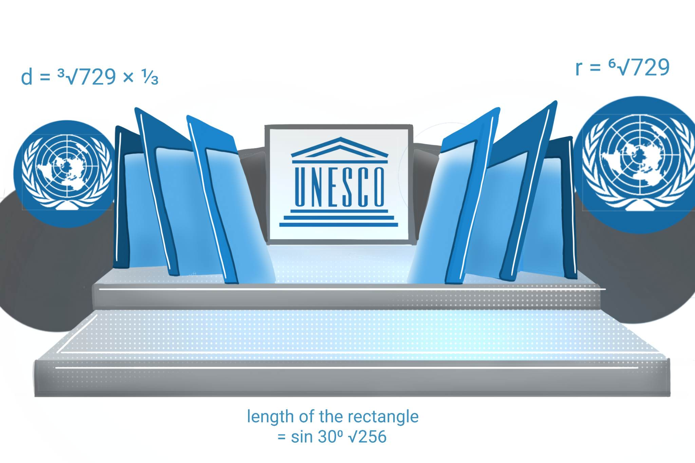

Globalization has had a major impact on technology in recent years. One of the most significant effects of globalization on technology is the increased ability to share knowledge and ideas with people around the world. This has led to a rapid exchange of information and the development of new technologies at a faster rate than ever before.
Another positive effect of globalization on technology is the increased access to new markets. Companies can now sell their products and services to a global audience, which has led to the growth of many businesses and the creation of new jobs.
Additionally, globalization has made it easier for people to access technology and its benefits. With the expansion of the internet and the development of mobile technology, people in even the most remote areas can now connect to the rest of the world and access information and resources that were previously out of reach.
Overall, globalization has had a positive impact on technology, leading to increased knowledge sharing, the growth of businesses, and increased access to technology for people around the world.
by 10-Einstein
